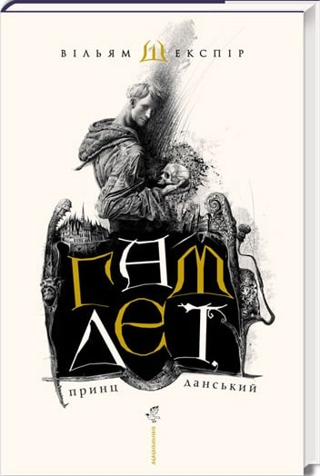

Чорнильно-чорне серце
Коли до офісу детективів приходить перелякана Еді Ледвелл, благаючи про розмову з Робін Еллакотт, приватна розслідувачка не знає, що й думати. Еді, співавторку популярного коміксу «Чорнильно-чорне серце», переслідує таємнича особа з інтернету, що називає себе Аномія. Еді конче треба дізнатися, хто ця людина. Робін вирішує, що у такій справі агенція допомогти не може — і більше не згадує про цей випадок, аж поки за кілька днів не надходить шокуюча новина: Еді викрали, використавши шокер, та вбили на Гайґейтському цвинтарі, де відбуваються події «Чорнильно-чорного серця». Робін та її напарник Корморан Страйк розпочинають квест, намагаючись встановити особу Аномії, і вступають до лабіринту онлайнових псевдонімів, ділових інтересів та сімейних конфліктів, у якому годі розібратися. Ця справа змусить Страйка та Робін вичерпати власні детективні таланти до самісінького дна — а ще піддасть їх новим жахливим загрозам…

Кров і попіл. Книга 4. Війна двох королев
Маківка стала не лише королевою, а й богом, проте це її геть не тішить. Хіба може вона почуватися щасливою, коли Кастіл, її споріднене серце, є бранцем Кривавої королеви? Дівчина ладна на все, аби звільнити коханого, але для цього їй доведеться переконати військову еліту Атлантії вести війну за її правилами та знайти рівновагу між особистим життям і вищою метою — звільненням Солісу від тиранії Кривавої королеви.
Кастілові в полоні справді ведеться зле. Його тримають у жахливих умовах, піддають тортурам, у яких бере участь і сама Кривава королева. Однак чи не найбільше йому болить через відсутність зв’язку з Маківкою. Де вона, що з нею? І чому його рідний брат перейшов на бік Ісбет. Відповіді на ці запитання будуть дуже несподіваними...

Лісова пісня
«Лісова пісня» — драма-феєрія в трьох діях. П'єса написана в 1911 році, уперше була поставлена 22 листопада 1918 року в Київському драматичному театрі. Твір є одним з перших прообразів фентезі в українській літературі.
У «Лісовій пісні» втілилося народне сприйняття навколишнього світу, давнє міфологічне мислення українців.
Гостро постає проблема відносин людини і природи, які дуже часто не є гармонійними. Людина звикла ставитися до природи, як до засобу, що робить її життя зручнішим. Використовуючи природні дари, людина не помічає своїх шкідливих дій.
Мавка є втіленням не тільки краси і беззахисності природи, але й духовної краси людини, що не може бути знищена в повсякденних дрібних турботах. Вона вічно відроджується.

П'ятдесятниця
Події п'єси розгортаються навколо старовинної фрески, знайденої у старій закинутій церквичці, в якій наполеонівські солдати колись влаштували стайню, німецькі фашисти - гестапо, комуністи - музей історії релігії, а потім продуктовий склад. Відкритий стінопис композиційно подібний на шедевр Джотто "Оплакування Христа", щоправда, створений на кілька десятиліть раніше, що може змінити історію мистецтвознавства. Отже, за фреску розгортається справжня війна...
За динамічним сюжетом, що нагадує вибухову суміш з інтелектуального детективу, трилера і соціальної драми, приховані болючі питання сучасності, на які інколи страшно відповідати.

Гамлет принц данський
Книга "Гамлет" - перший у третьому тисячолітті український переклад вершинного твору Вільяма Шекспіра. Цю трагедію було написано більше півтора століття тому, але вона не втрачає своєї актуальності. Це найвідоміша п'єса Шекспіра, яка залишається на сцені до сьогодні. "Гамлет" - це трагічне оповідання про принца данського, який стикається з буремними подіями та зневірою в людинах. У цьому виданні Юрій Андрухович і Владислав Єрко представили своє бачення культового твору, яке допоможе прочитати "Гамлета" з нової, цікавої перспективи.

Мобільні хвилі буття
«Мобільні хвилі буття, або Verbum caro factum est» — драматургічний дебют українського письменника Володимира Рафєєнка. Автор був змушений жити в окупації упродовж місяця весною 2022-го на дачному хуторі поміж Бучею і Бородянкою. Ця п’єса — його спроба осмислити за допомогою літератури власний травматичний досвід російсько-української війни.
Герої п’єси — кільканадцять випадкових людей, що у перші дні окупації опинилися поруч у кооперативному поселенні «Ближні сади». Їх об’єднує спільна потреба — впіймати телефоном на віддаленій лісовій галявині блукаючий мобільний сигнал. Але буття у час війни втрачає звичні кордони — і на зв’язок із живими людьми виходять покійні родичі, герої Шекспіра та Едгара По, а над головами хуторян — розчахнувся всіяний колючими зірками український космос.
По-бароковому пишна, жорстока і щемка п’єса Володимира Рафєєнка — про ціну, яку іноді платить людина за право доторкнутися до того, над чим не має влади навіть смерть.